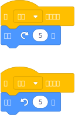
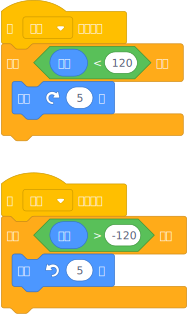
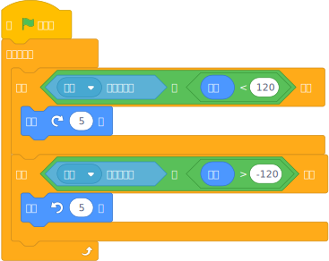
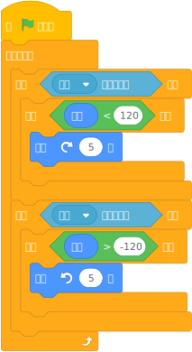

鍵盤操控轉動
鍵盤操控轉動

在射擊遊戲中，如果要調整射擊角度，使用鍵盤按鍵操控會較使用滑鼠操控還來的精確。
「原地轉動」是屬於「改變轉向」，可使用右轉@turnright()度或左轉@turnleft()度來操作。
以下示例以鍵盤向左、向右按鍵來操控。
【按下鍵盤方向鍵】事件啟動「轉動」。

 直接轉向法
直接轉向法
這是最簡單的方式，是以當[空白 v]鍵被按下來啟動事件，串接右轉@turnright()度或左轉@turnleft()度來實現。

💥當按下左、右方向鍵後，角色就會朝指定方向轉動，也就是角色的「方向」改變了。
💥這種方式有一個限制，當要以按住按鍵不放開來使角色進行連續轉向時，一開始會有約0.5的停頓。
直接轉向，但有限制
這就像轉動人頭一樣，有角度的限制。

💥這種方式有一個限制，當要以按住按鍵不放開來使角色進行連續轉向時，一開始會有約0.5的停頓。
循環轉向法
循環轉向，但有限制
除了進行按鍵偵測外，同時偵測角色的方向是否還在可轉向的範圍內，二個條件同時滿足才能轉向。

也可以使用相嵌的方式做多重條件的判斷。


要使鍵盤按鍵可以同時操控角色的「移動」和「轉動」時，要如何做呢？